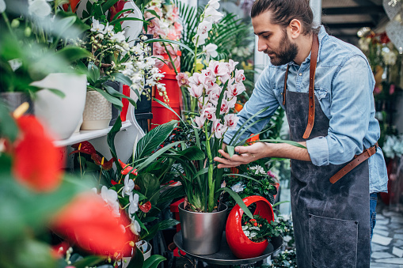
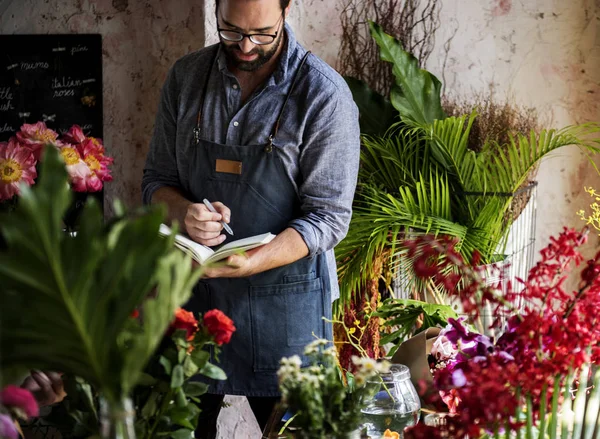

HAKKIMIZDA
Dükkanımızın kurucusu Fatih Uzun'dur.Fatih Bey küçüklüğünden beri ilgi duyduğu çiçekler ile ilgili bu dükkanı 2016'da açtı. Bu dükkanda Sevgililer Günü,Düğün,Kına ve Nişan gibi törenler için her yıl belirli günlerde Kampanyalar gerçekleşiyor sakın kaçırmayın!.Burada Ürünlerimiz kısmında çiçeklerin stokta olup olmadığını kontrol edip bizi arayıp veya sepet logosuna tıklayıp kart bilgilerinizi girip alışveriş yapabilirsiniz.Adres ve telefon numaramız için İletişim sekmesine gidebilirsiniz.
VİZYONUMUZ
Vizyonumuz burada kaliteli,güvenilir bir e-ticaret gerçekleştirmektir.Çalışanlarımız hassas ve titiz bir şekilde hizmet ederler,müşteri ile sosyal iletişimleri değerlendirildi ve hepsi kriterlere göre işe alındı.
 